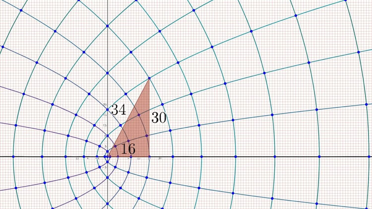
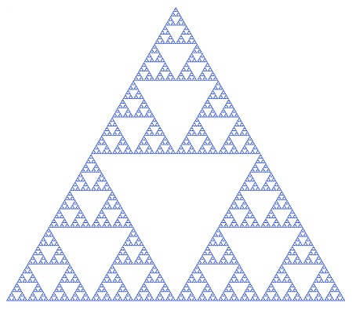
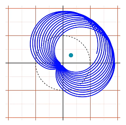
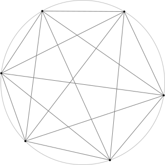
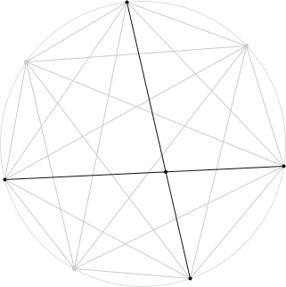

3Blue1Brown1¶
勾股数与共形映射 | Pythagorean Triples and Conformal Map¶
在复平面上取一个整点（lattice point）\(z=u+vi\), 那么它的平方必为实虚部皆为整数的复数并且其模亦为整数, 那么这样就得到了一组勾股数
\[ u^2-v^2,\ 2uv,\ u^2+v^2. \]
由于 \(u, v\) 可以取遍整个整数集, 所得到的点可以涵盖所有“最简”的勾股数.
在复平面上其对应的变换是
\[ w=z^2. \]
图中各交点为原整网格线交点, 故它们表示的就是对应的平方数. 由这些点作图示三角形就可以得到一组勾股数.

沃利斯公式 | Wallis' Product¶
\[ \prod\limits_{n=1}^{\infty}\left(\frac{2n}{2n-1}\cdot\frac{2n}{2n+1}\right)= \frac{2}{1}\cdot\frac{2}{3}\cdot\frac{4}{3}\cdot\frac{4}{5}\cdot\frac{6}{5}\cdot\frac{6}{7}\cdot\frac{8}{7}\cdot\frac{8}{9}\cdot\cdots=\frac{\pi}{2} \]
引理: 在复平面上作 \(1\) 的 \(N\) 次根, 这些点等距地分布在单位圆上. 从 \(1\) 开始按逆时针记作 \(L_0, L_1, \cdots L_{N-1}\). 那么,
- 其中任一点到其余点距离之积等于 \(N\), 即等分点数;
- 其中任意相邻两点在圆弧上的等分点到这个点列的距离之积恒为 2.
证明: \(\forall z\in \mathbb{C}\), 由于左右式根相同且次数相同, 有
\[ z^N-1=(z-L_0)(z-L_1)\cdots(z-L_{N-1})\tag{1}, \]
两边除以 \((z-L_0)\), 整理得
\[ \frac{z^N-1}{z-1}=1+z+z^2+\cdots+z^{N-1}\tag{2}. \]
给定 \(N\), 如果在这个单位圆上取一点 \(z\),
若 \(z\) 与某一单位根重合, 不妨令 \(z=L_0=1\), 则由 \((2)\) 式, 它到其余单位根的距离之积为
\[ D_{L_0}=1+1+1^2+\cdots+1^{N-1}=N\tag{3}; \]
若 \(z\) 异于任一单位根, 则由 \((1)\) 式, 它到所有单位根的距离之积为
\[ D_z=\vert z^N-1 \vert. \]
此式的几何意义在于, 若 \(z\) 在 \(L_0\) 和 \(L_1\) 之间的弧上, 且 \(\cfrac{\arg z}{\arg L_1}=f\), 则 \(\cfrac{\arg z^N}{\arg L_1^N}=f\). 即 \(z^N\) 的辐角对应的圆弧占圆周的比例等于 \(z\) 的辐角对 \(L_1\) 的比例. 即 \(D_z\) 等于圆弧上对应比例 \(f\) 的点的辐角对应的弦长.

取 \(f=0.5\), 故 \(z^N=-1\), 距离积对应单位圆直径, 即
\[ D_z|_{f=0.5}=2\tag{4}. \]
一般地, 不难推出
\[ D_z=2\sin(f\pi)\tag{5}, \]
值得注意的是, 这个结果和 \(N\) 无关.
由式 \((3)\)、\((4)\) 和对称性, 引理得证.
在以上引理相同的图形中, 取点 \(S\) 为圆弧上 \(L_0\) 和 \(L_1\) 的等分点, 点 \(K=L_0\),
\(\forall N\in \mathbb{N}^+\), 可知此两点分别到除 \(L_0\) 之外的所有等分点距离之积的比
\[ \frac{D_K}{D_S}=\frac{N}{2\,/\,\vert L_0\hspace{-2mu}S\vert}=\frac{N\cdot\vert K\hspace{-2mu}S\vert}{2}\tag{6}. \]
同时, 若对每一点计算距离之比再相乘, 可以得到相同的“距离积”之比
\[ \frac{D_K}{D_S}=\prod\limits_{i=1}^{N}\frac{\vert L_i-K\vert}{\vert L_i-S\vert}\tag{7}. \]
从 \(L_{N-1}\) 开始, 顺时针给点列 \(\lbrace L_n\rbrace\) 在下半圆的部分重新编号为 \(L_{-1}, L_{-2}, L_{-3},\cdots\)
当 \(N\rightarrow +\infty\) 时弧长比、弦长比和圆周角比趋同. 对上半圆的点,
\[ \frac{\vert L_p-K\vert}{\vert L_p-S\vert}=\frac{2p}{2p-1}\tag{8}, \]
其中 \(p\in\left[1, \frac{N}{2}\right]\cap\mathbb{N}^+\);
对下半圆的点,
\[ \frac{\vert L_{-q}-K\vert}{\vert L_{-q}-S\vert}=\frac{2q}{2q+1}\tag{9}, \]
其中 \(q\in\left[1, \frac{N}{2}\right)\cap\mathbb{N}^+\).
将 \((8)(9)\) 两式相乘即得式\((7)\)中的积, 进一步得
\[ \prod\limits_{n=1}^{\infty}\left(\frac{2n}{2n-1}\cdot\frac{2n}{2n+1}\right)=\lim_{N\rightarrow +\infty}\frac{N\cdot\vert K\hspace{-2mu}S\vert}{2}. \]
又
\[ \vert K\hspace{-2mu}S\vert\rightarrow \frac{1}{2}\frac{2\pi}{N}, \]
故
\[ \prod\limits_{n=1}^{\infty}\left(\frac{2n}{2n-1}\cdot\frac{2n}{2n+1}\right)=\frac{\pi}{2}. \]
得证.
更一般地, 若 \(S\) 取的是 \(L_0, L_1\)间比例为 \(f\) 的点, 同理可得
\[ \prod\limits_{n=1}^{\infty}\left(\frac{n}{n-f}\cdot\frac{n}{n+f}\right)=\prod\limits_{k\ne 0}\frac{k}{k-f}=\frac{2\pi f}{D_S}. \]
由式 \((5)\), 整理得
\[ \sin(f\pi)=f\pi\prod\limits_{k\ne 0}\left(1-\frac{f}{k}\right). \]
三角函数线¶
由三角形相似易证.
注意 \(\sin\)、\(\cos\)、\(\tan\) 都直接与 \(x\) 轴有关, 而 \(\mathrm{co}\)- 都直接与 \(y\) 轴有关.
分形与分数维 | Fractals and Fractal Dimension¶
维度数的一种定义是: 对长度（一维）进行系数为 \(k\) 的缩放时, \(n\) 维上的缩放比例为 \(k^n\).
谢尔宾斯基三角形（Sierpinski triangle）与科赫雪花（Koch snowflake）


对谢尔宾斯基三角形, 将其缩放到原 \(1/2\), 其整个图形的缩放比例则为 \(1/3\). 故对其维数\(D_s\)有
\[ \left(\frac{1}{2}\right)^{D_s}=\frac{1}{3}, \]
即
\[ D_s=\log_2(3)\approx1.585. \]
对科赫雪花, 有
\[ D_k=\log_3(4)\approx1.262. \]
若用一维来量度, 则可以在其中定义一条无限长的线, 而从二维来看, 它的面积又是 0, 只有用一个分数维的测度来度量它才是合适的.

相同地, 可以将这种规律应用到非自相似的分形上. 英国海岸线的维度约为 1.21.
分形的定义就是非整数维度的图形. 在放大任意倍数之后, 它保持原来的粗糙度.
有理数的勒贝格测度¶
问题: 如何用总长度小于 1 的一组开区间覆盖 \((0,1)\) 中所有的有理数?
可以将有理数列成一个序列:
\[ \frac{1}{2},\frac{1}{3},\frac{2}{3},\frac{1}{4},\frac{3}{4},\frac{1}{5},\frac{2}{5},\frac{3}{5},\frac{4}{5},\frac{1}{6},\frac{5}{6},\frac{1}{7},\frac{2}{7},\frac{3}{7},\frac{4}{7},\frac{5}{7},\frac{6}{7},\cdots \]
由此可以定义“第 \(n\) 个有理数”.
构造一个级数, 使其收敛于 1, 如
\[ \sum\limits_{n=1}^{\infty}2^{-n}. \]
令第 \(n\) 个开区间的长度为这个级数的第 \(n\) 项, 并且这个开区间只负责覆盖第 \(n\) 个有理数. 问题由此得到解决.
事实上这个无限和可以任意小, 这也就证明了有理数集是零测集.
傅里叶变换 | Fourier Transform¶
傅里叶变换的一种理解方式是, 将输入量 \(g(t)\) 顺时针缠绕到一个复平面中的单位圆上, 缠绕的频率为 \(f\).

得到的函数即
\[ g(t)\mathrm{e}^{-j2\pi ft}=g(t)\mathrm{e}^{-j\omega t}. \]
对一段时间 \(\Delta t\) 上的输入量, 得到的图形的几何中心为
\[ \frac{1}{\Delta t}\int\limits_{\Delta t}g(t)\mathrm{e}^{-j\omega t}\mathrm{d}t. \]
给定一个 \(\omega\) 这个表达式会有确定的输出. 当这个 \(\omega\) 接近输入信号中一正弦分量的角频率时, 会出现峰值, 在其它时候则接近 0. 这样就达到了分离各个分量的目的.
更精确地, 如果在整个数轴上积分, 则 \(\omega\) 不等于任一分量角频率时, 图形将是完全对称的, 即输出为零, 以上函数只在分量角频率出取非零值. 积分前的系数也一并除去, 使得持续时间长的分量在输出上有更大的值, 由此得到
\[ F(\omega)=\int\nolimits_{-\infty}^{+\infty}g(t)\mathrm{e}^{-j\omega t}\mathrm{d}t, \]
即傅里叶变换.


内接正方形问题¶
问题: 平面上任意闭合回路上是否可以找到四个点组成一个正方形?（尚未解决）
弱化问题: 平面上任意闭合回路上是否可以找到四个点组成一个矩形?
寻找一个内接矩形相当于找到两个互异的点对, 它们的距离相等并且中点重合. 如果在回路中取出任一点对, 在其中点正上方, 作一距离到平面为点对距离的点. 这样的点集是一个以回路为边界的连续曲面. 要证存在上述的两个点对, 相当于证明这两个互异的点对被映射到了同一个点, 即该曲面自交.

将曲面上的点映射到 \([0,1]\) 上, 那么点对就可以被映射到正方形\([0,1]\times[0,1]\)上. 又由于这个正方形的两组对边的对应点分别由一组点对映射而来, 所以在逆映射时应将正方形两对边分别连接到一起. 但这样表示的点对是有序的. 这样的情况下同一点对会被视为两对.
为了表示无序点对, 我们只需取正方形 \(x\leqslant y\) 的部分. 得到的三角形中, \(x=y\) 上的点是点对两点重合的情况, 即映射得到的点就落在回路上.
但是为了逆映射的完整性, 还需要将下边界和右边界按箭头方向连接到一起, 即 \((x,0)\) 和 \((1,x)\) 表示的其实是同一点对. 要这样做我们将这个三角形先切开, 连接两边再将切开的边连接回去. 这样得到的是一个莫比乌斯带. 这样就建立了点对和莫比乌斯带上的点的连续一对一关系.

由于点对和曲面上的点又有连续一对一关系, 所以可以将这个莫比乌斯到连续地映射到曲面上. 即这个莫比乌斯带和曲面同胚. 这样来看, 由于莫比乌斯带边界上是点对两点重合的情况, 那么它必定映射到回路上, 而这样做的结果就是曲面自交. 得证.
分圆问题¶
问题: 在圆上取 \(n\) 个点, 用线段两两连接它们, 点的取法使得不出现三线交于一点的情况. 这些线段将圆分为多少区域?

由于每一对点对都有线段连接, 所以任意四个点连接而成的线段都对应在圆内的一个交点. 故圆内交点数为 \(\mathrm{C}_n^4\), 即这些线段的交点总数为
\[ V=\mathrm{C}_n^4+n. \]

显然连接圆上分点的线段数为 \(\mathrm{C}_n^2\). 圆内交点在分割这些线段时, 由于不存在三线共点, 故每增加一个交点, 会使得边数增加 2. 再计入圆弧, 总边数
\[ E=\mathrm{C}_n^2+2\cdot\mathrm{C}_n^4+n. \]
由欧拉公式
\[ V-E+F=2 \]
整个平面中区域数为
\[ F=\mathrm{C}_n^2+\mathrm{C}_n^4+2. \]
则圆内区域数
\[ F_\mathrm{in}=F-1=\mathrm{C}_n^2+\mathrm{C}_n^4+1. \]
滑块碰撞与 \(\pi\)¶
两个滑块静止在一边是无限重墙壁的光滑平面上, 大滑块首先朝内运动, 使得小滑块在墙壁和大滑块之间来回碰撞, 且这个系统在整个运动过程中没有能量损失. 若大滑块质量是小滑块的 \(100^n\;(n\in\mathbb{N}^+)\) 倍, 则总碰撞次数正好是 \(\pi\) 的前几位数字.

整个运动过程始终满足能量守恒
\[ \frac{1}{2}m_1v_1^2+\frac{1}{2}m_2v_2^2=\text{const}. \]
绘制 \(x=\sqrt{m_1}\cdot v_1\) 和 \(y=\sqrt{m_2}\cdot v_2\) 的关系得到一个圆, 即两个滑块的速度相图. 以向外为正, 大滑块开始运动时, 状态点位于圆的最左边.

发生第一次碰撞时, 发生动量的传递, 由动量定理
\[ m_1v_1+m_2v_2=\text{const}, \]
第一次碰撞前后的状态必在斜率为 \(k=-\sqrt{\cfrac{m_1}{m_2}}\) 的直线上.
接下来, 小滑块撞向墙壁, 使得速度反向. 即状态点跳变至关于 \(x\) 轴对称的点.
接下来的运动过程仍满足上述规律, 直到最后一次碰撞结束, 即 \(0\leqslant v_1<v_2\), 对应于状态点落在紫色区域时.

观察相图可得, 由于其中表示动量守恒的直线斜率不变, 故这组折线将圆周（除了最右边一段）分为对应圆周角相等的圆弧, 即这些圆弧对应相等的圆周角, 记为 \(2\theta\).

所以碰撞次数为满足 \(N\cdot 2\theta<2\pi\) 的 \(N\) 的最大整数值. 而圆周角
\[ \theta=\arctan\vert k\vert, \]
若大小滑块的质量比满足
\[ m_2:m_1=100^n, \]
由于 \(\theta\) 较小,
\[ \theta=\arctan\sqrt{\frac{m_1}{m_2}}\approx10^{-n}. \]
故可以求出
\[ N=\left\lfloor \frac{\pi}{10^n}\right\rfloor, \]
即 \(\pi\) 的前几位.
微积分的本质¶
正弦函数的导数¶

作单位圆和对应的正弦线, 取小量 \(\mathrm{d}\theta\) 对应正弦函数的变化量 \(\mathrm{d}(\sin\theta)\), 由此组成的三角形和图中大三角形相似. 由此,
\[ \frac{\mathrm{d}(\sin\theta)}{\mathrm{d}\theta}=\frac{邻边}{斜边}=\cos\theta. \]
\(\tfrac{0}{0}\) 型不定式的洛必达法则¶

在零点 \(x=a\) 附近取小量 \(\mathrm{d}x\), 两个函数在此都视为线性, 则
\[ \frac{f(x)}{g(x)}\approx\frac{\cfrac{\mathrm{d}f}{\mathrm{d}x}(a)\cdot\mathrm{d}x}{\cfrac{\mathrm{d}g}{\mathrm{d}x}(a)\cdot\mathrm{d}x}, \]
即
\[ \lim\limits_{x\rightarrow a}\frac{f(x)}{g(x)}=\frac{\cfrac{\mathrm{d}f}{\mathrm{d}x}(a)}{\cfrac{\mathrm{d}g}{\mathrm{d}x}(a)}. \]